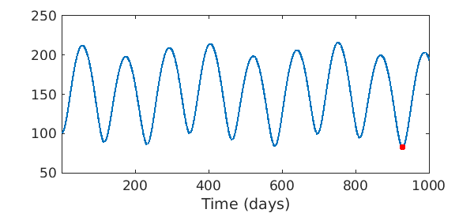
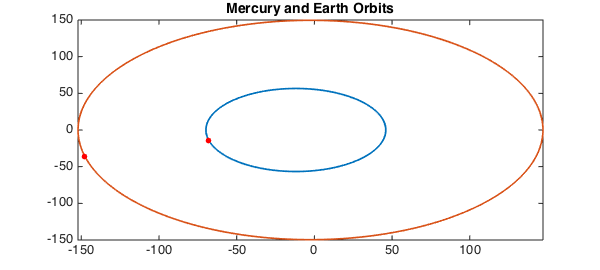

Let us take as our domain a period of 1000 days.
domain = [0 1000];
t = chebfun('t', domain);
Here are some equations we shall take as the elliptical orbits of the Earth and Mercury during this period [1]:
y_m = 56.6741*sin(2*pi*t/87.97); x_m = -11.9084+57.9117*cos(2*pi*t/87.97); y_e = 149.5832*sin(2*pi*t/365.25); x_e = -2.4987 + 149.6041*cos(2*pi*t/365.25);
Chebfun is excellent in computing a function like the distance between the planets as a function of time:
f = sqrt((y_m-y_e).^2 + (x_m-x_e).^2);
We can now compute minval, the minimum distance, and mintime, the time of its occurrence.
[minval,mintime] = min(f);
plot(t,f)
xlabel('Time (days)')
hold on, plot(mintime,minval, '.r', 'markersize', 20)

Here are the parametrized orbits with the planets' positions at mintime.
figure
plot(x_m, y_m), hold on
plot(x_e, y_e)
plot(x_m(mintime),y_m(mintime),'.r', 'markersize', 20)
plot(x_e(mintime),y_e(mintime),'.r', 'markersize', 20)
title('Mercury and Earth Orbits')

References
- Charles F. Van Loan, Introduction to Scientific Computing, 1997, p. 274.